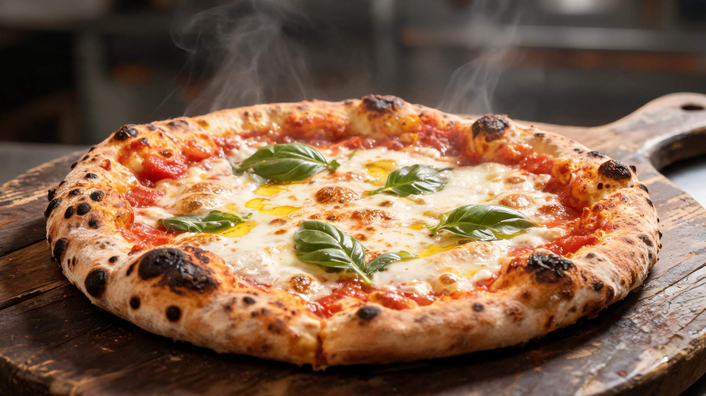

Ratios are fixed

3:2 cards and glossary · 4:3 guide steps · 16:9 finished photo · 3:1 glossary banner · 21:9 desktop hero · 4:5 mobile hero · 1:1 textures. The box reserves its ratio before the file arrives, so nothing reflows while scrolling.
Picture on a tile
Napoli klassisch~28 hAn den AVPN-Standard angelehnt
The photo is decorative: the text below already names the recipe, so a described photo would say it twice to a screen reader.
No picture yet
Napoli Poolish~26 hMildes Aroma, luftige Krume
A missing file renders nothing at all, never an empty frame or a broken icon. A grid mixing pictured and unpictured tiles is the normal state while the set is still being produced.